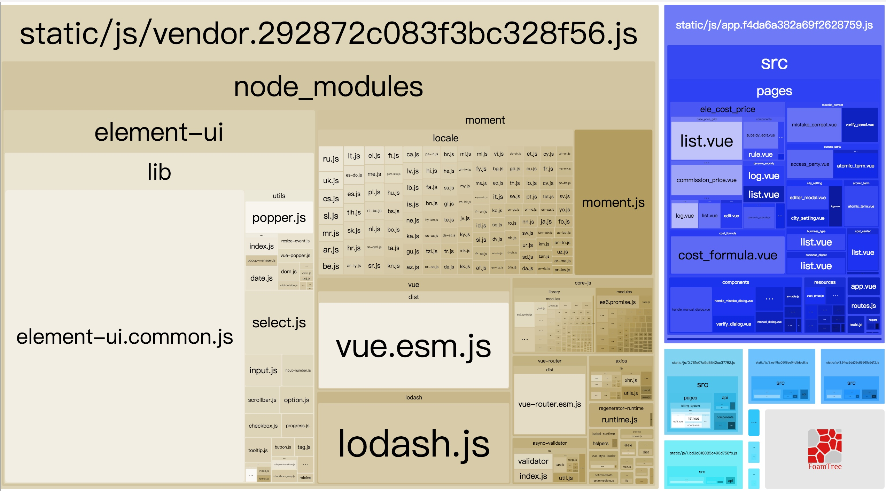
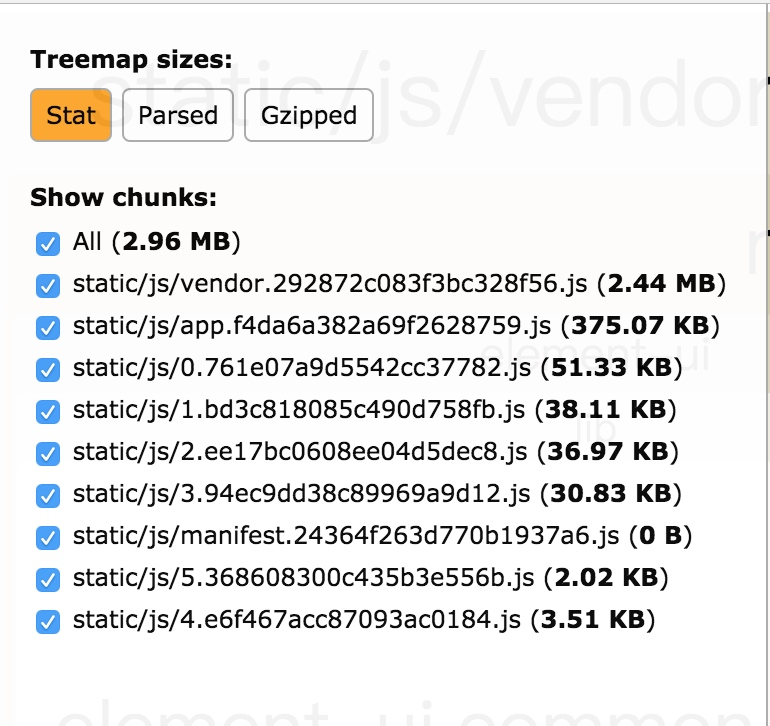
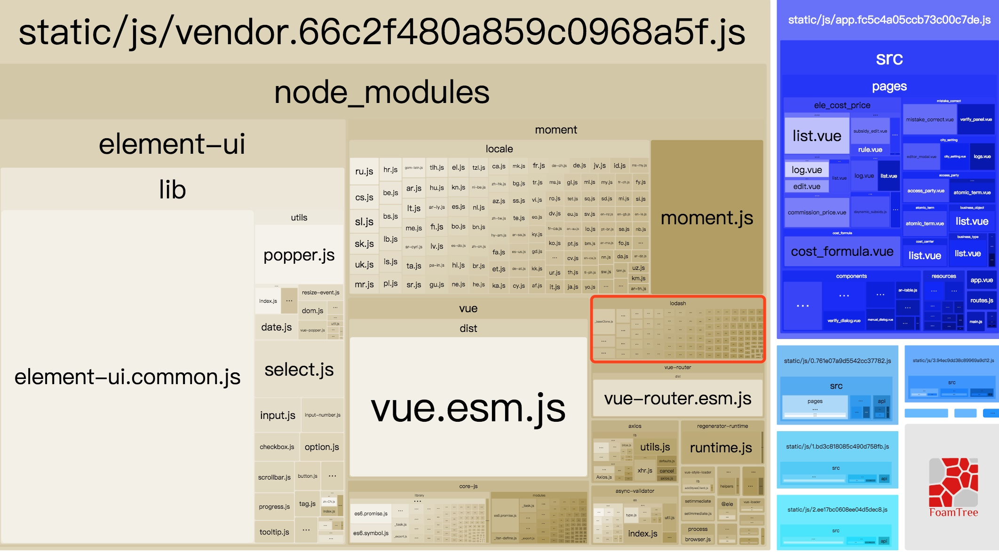
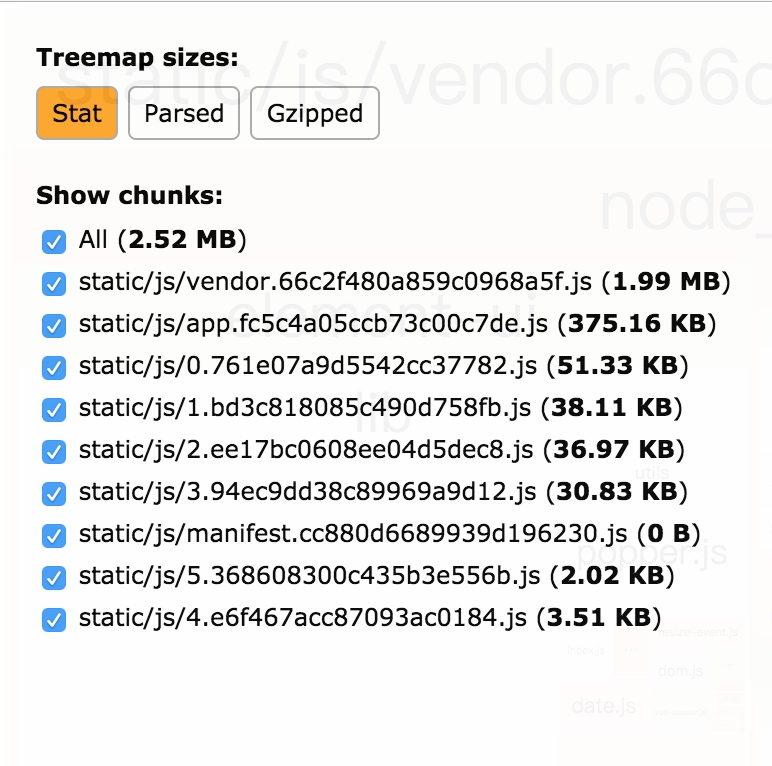
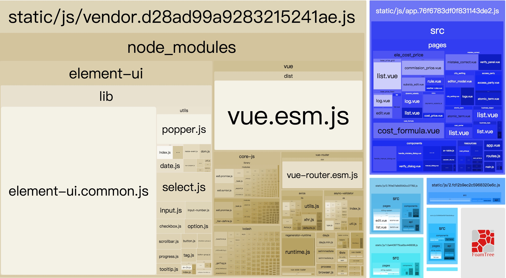
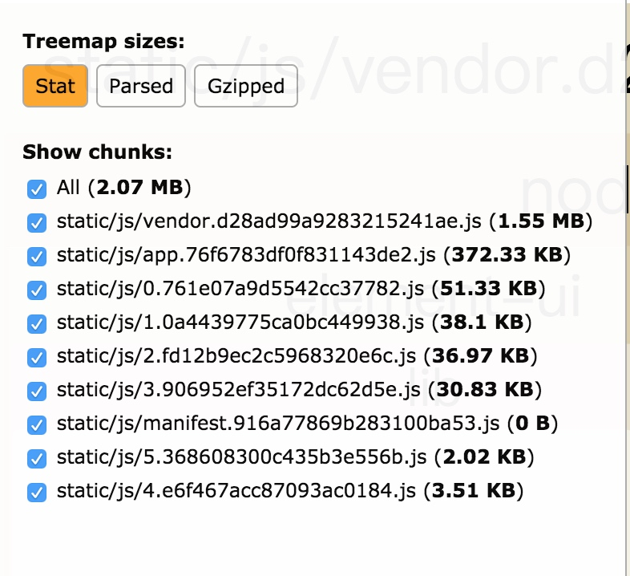
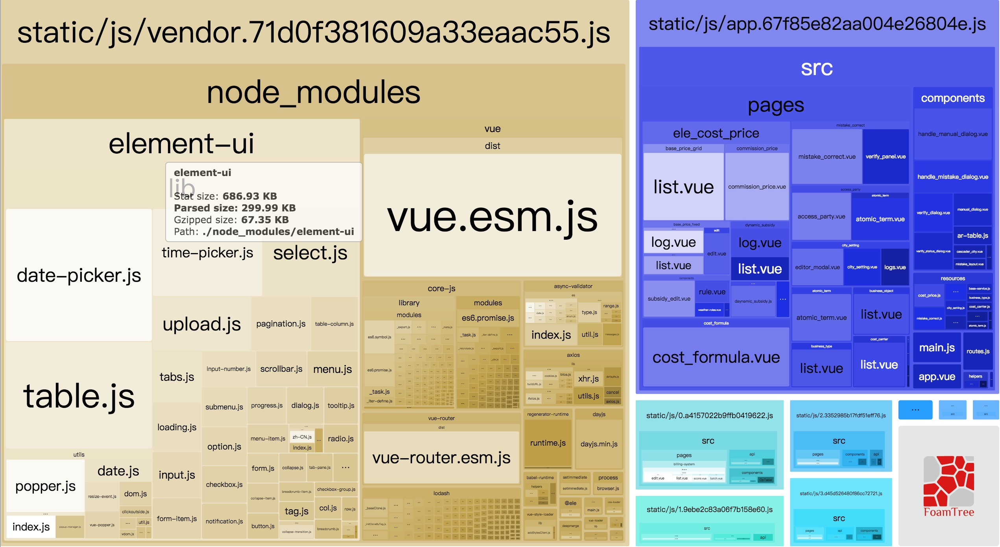
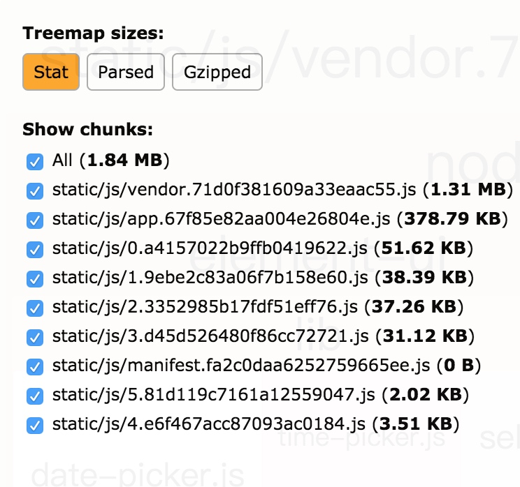
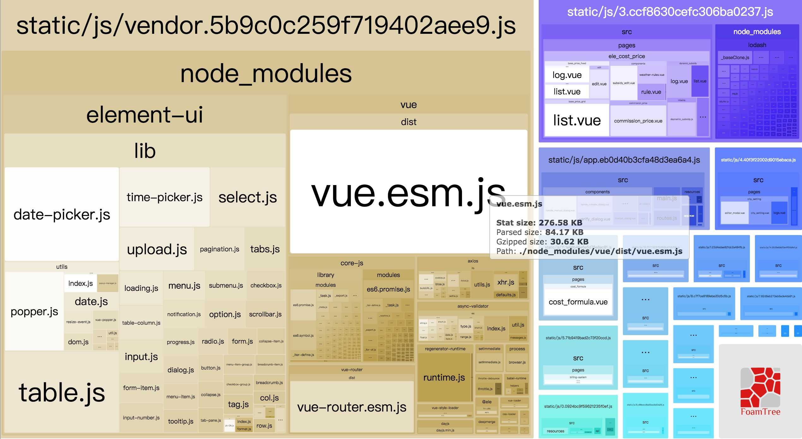
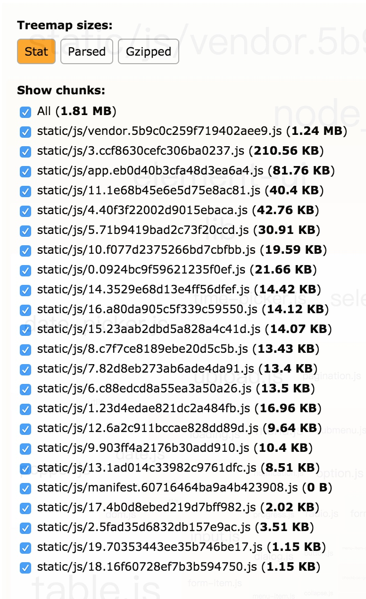

应用包打包体积优化
一个接手的Vue外部项目，build 非常慢，试着去优化一波。
首先使用 webpack-bundle-analyzer 来分析一波是哪些文件造成的：
安装
项目根目录运行：
npm install --save-dev webpack-bundle-analyzer
配置
在使用vue-cli生成的脚手架文件中，通过修改build文件夹下的webpack.prod.conf.js：
引入模块
const BundleAnalyzerPlugin = require('webpack-bundle-analyzer').BundleAnalyzerPlugin;
// ...
plugins: [
// ...
new BundleAnalyzerPlugin(),
]
// ...
通过插件生成的包结构图如下：


可以看出vendor.js 很大了，首先开始拆vendor:
lodash
这里lodash 没有按需加载，导致包很大，我们可以按需打包lodash
lodash 官方为每个方法都维护了独立的 npm 包：
method packages
// npm install lodash.add
import add from 'lodash.add';
// npm install lodash.cloneDeep
import cloneDeep from 'lodash.cloneDeep';
但是这种方式有着以下缺陷：
- 每当使用一个新的方法就需要安装一个新的 npm package
- npm packge 间存在一些重复公用方法且无法优化
- 每一个方法都需要单独写一行 import
- lodash V5.0.0 将会放弃对这些模块的维护
cherry-pick
在 lodash 源码中，所有的方法被组织在一个个同名的文件中，开发者可以根据自己的需要直接引用源码来实现按需引入的目的，这种方式被官方称为 cherry-pick。
import add from 'lodash/add';
import cloneDeep from 'lodash/cloneDeep';
cherry-pick 虽然只需安装一个 lodash 包，但是有时还是要写很多行的 import。
这这个项目中 我们发现只用到了lodash 的一个方法，那么可以使用cherry-pick 引入该方法。重新build 之后，我们再看一下包体积：

此时lodash 打包肉眼可见的变小了，再看一下整个包体积变化：

相比较之前，小了0.4MB，接着我们再对moment.js 进行改造：
对于 moment.js 这种全而大的 JS 时间库，虽然很方便，但是真的是太重了，而且一个项目可能只需要使用其中几个常见的API。此时如果想要优化moment 的体积，可以使用Day.js 代替，Day.js 是一个轻量的 JavaScript 时间日期处理库，和 Moment.js 的 API 设计保持完全一样. 如果你曾经用过 Moment.js, 那么你已经知道如何使用 Day.js
Day.js 的基本操作如下，相同的API，相同的链式操作：
dayjs().startOf('month').add(1, 'day').set('year', 2018).format('YYYY-MM-DD HH:mm:ss');
特点：
🕒 和 Moment.js 相同的 API 和用法
💪 不可变数据 (Immutable)
🔥 支持链式操作 (Chainable)
🌐 I18n 国际化
📦 仅 2kb 大小的微型库
👫 全浏览器兼容
麻雀虽小，五脏俱全，Day.js 包含了时间处理的全部常用方法，并且仅仅有 2kb 大小。因此想缩小打包体积，提升开发体验只需要replace(/moment/g, 'dayjs') 全局替换一下。就能从 Moment.js + locals 200kb 减小成 dayjs 2kb的体积。所有的API调用都保持不变，无需修改。
这次我们再看一下 改为Day.js 之后的打包体积大小：


此时Day.js 已经小到在这张图上消失了，而TreeMap 大小又缩小了 0.5M 。
接下来最后的大头是 element-ui ，element-ui本身支持按需引入，不过对于该项目，全局搜索了一遍，发现被用到的组件非常多，这个时候要仔细文件，防止被漏掉某些组件。具体按需引入的的方式element-ui 官方文档有很详细的介绍，现在我们看一下打包的体积：


此时Treemap size 又减少了0.2MB。最后我们可以 Code Splitting，将代码分成一块一块，提升加载速度：
具体可以看Webpack 大法之 Code Splitting 最后我们打包出来的体积结构如下：


我们看到 每个router 的 js 都单独出来了，这样子有缩小了 0.2MB 的体积。
我们可以看到Vendor 还是很大，但是毕竟对于这个项目来说，业务很重的大系统，不可避免会这样，但是相比优化之前，已经好很多了，Treemap size 2.06M => 1.85M。